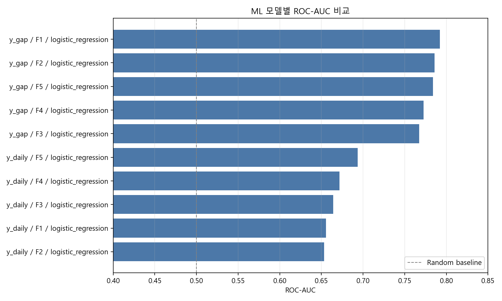
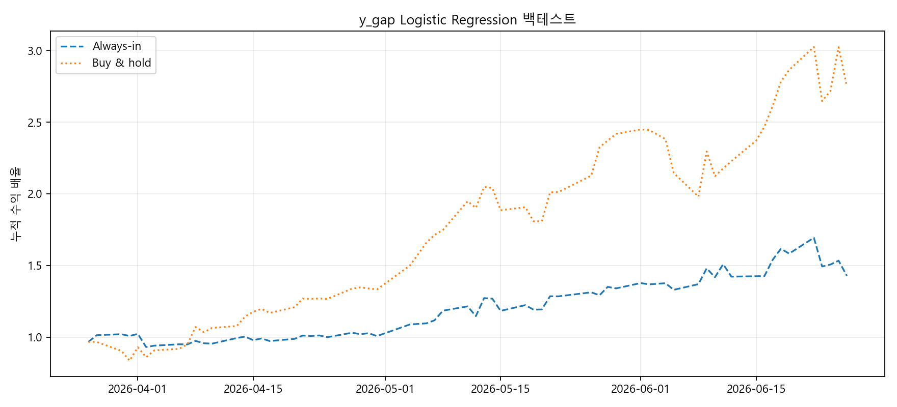
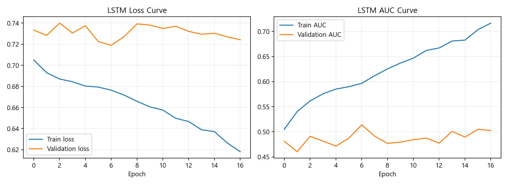
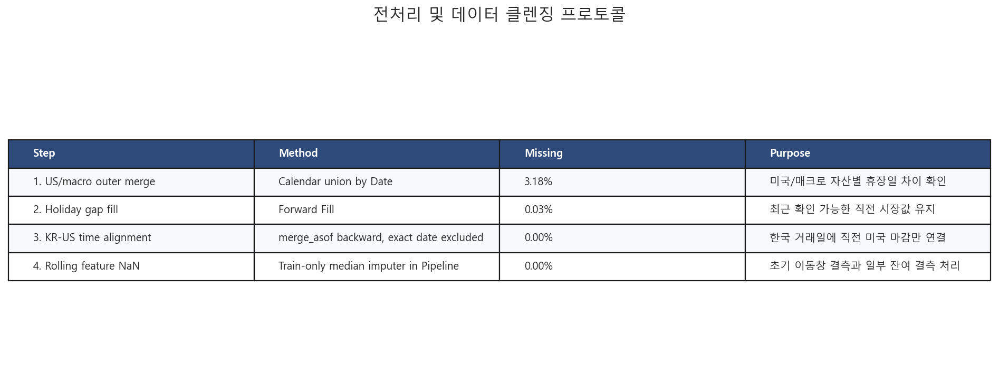
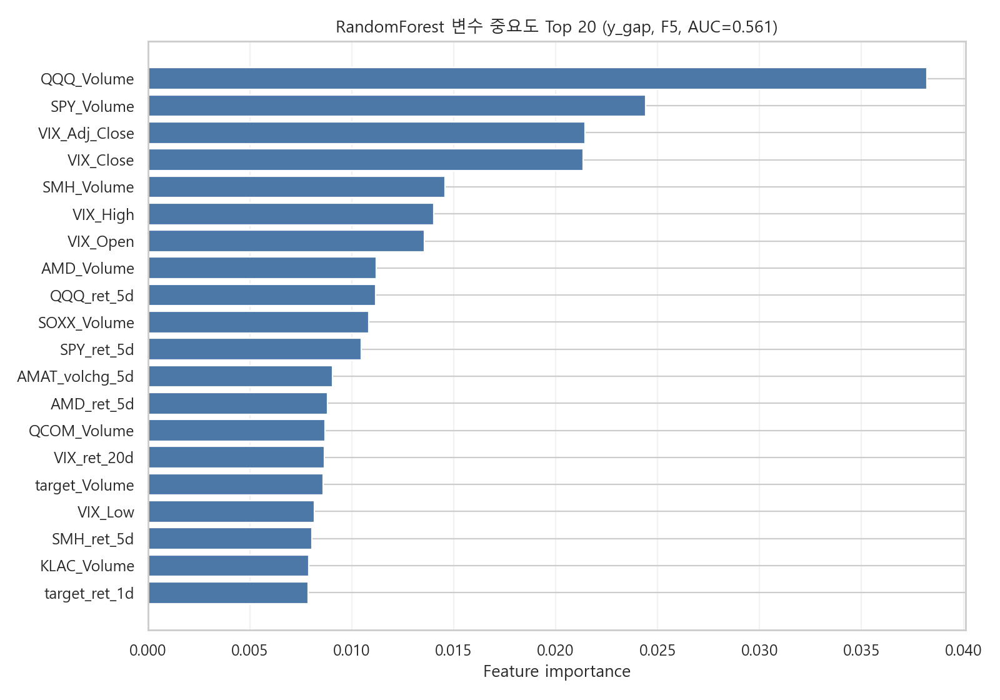
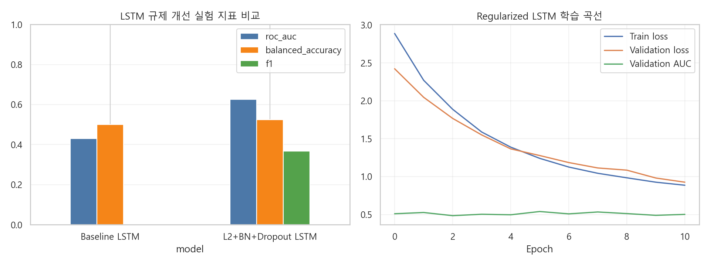

F1~F5
단계별 feature set 비교
2 ML
Logistic Regression, Random Forest
LSTM
수업 기반 시계열 딥러닝 모델
3M
최근 3개월 hold-out 평가
문제 정의
미국 주식시장은 한국 시장보다 늦게 마감합니다. 따라서 한국 시장이 열리기 전, 미국 반도체 업종의 직전 마감 정보를 이미 확인할 수 있습니다. 이 프로젝트는 해당 정보가 SK하이닉스의 다음 거래일 방향성 예측에 도움이 되는지 검증합니다.
- y_gap: 다음 거래일 시가가 전일 종가보다 상승했는지 여부
- y_daily: 다음 거래일 종가가 전일 종가보다 상승했는지 여부
- y_intraday: 당일 종가가 당일 시가보다 상승했는지 여부
데이터
- Target: SK하이닉스
- US ETF: SOXX, SMH
- US semiconductor stocks: NVDA, AMD, MU, INTC, AVGO, QCOM, AMAT, LRCX, KLAC
- Market indicators: QQQ, SPY, VIX
- FX / rates: USD/KRW, USD/JPY, Dollar Index, US 10Y
- Korea indicators: KOSPI, KOSDAQ
검증 설계
- 한국 거래일 기준으로 미국 직전 마감 데이터 매칭
- 미래 정보가 섞이지 않도록 `merge_asof` backward 정렬
- Scaler와 imputer는 train set 기준으로만 fit
- 최근 3개월 구간을 최종 hold-out test로 사용
Feature Set
| Feature Set | 구성 |
|---|---|
| F1 | 미국 반도체 ETF |
| F2 | F1 + 미국 반도체 주요 종목 |
| F3 | F2 + 미국 시장지표 및 VIX |
| F4 | F3 + 환율/금리 |
| F5 | F4 + 한국 시장 및 타깃 종목 과거 흐름 |
모델 성능 비교

y_gap 백테스트

LSTM 학습 결과

전처리 프로토콜

변수 중요도

LSTM Ablation

핵심 결론
미국 반도체 마감 정보는 SK하이닉스의 다음 거래일 방향성에 일부 신호를 제공했습니다. 다만 단독으로 안정적인 매매 전략을 만들기에는 한계가 있었고, 금융 시계열에서는 모델 복잡도보다 데이터 정렬, 누수 방지, 검증 설계가 중요했습니다.